Laser, CNC-Fräse & Plasma.
Ein kostenloses Programm.
Design, CAM und Maschinensteuerung in einem – wie LightBurn, Estlcam und OpenBuilds zusammen. Open Source, ohne Abo, ohne Konto.
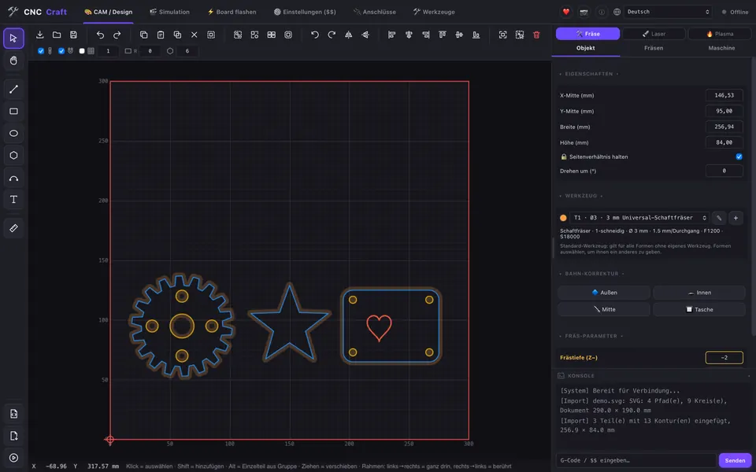
Alles von der Zeichnung bis zum fertigen Teil
Zeichnen oder importieren, Bahnen erzeugen, Simulation prüfen und den Job senden – ohne zwischen Programmen zu wechseln.
Zeichnen & Importieren
Formen, Text und Bézier-Kurven zeichnen oder SVG, DXF, PDF, PLT, Bilder und 3D-Modelle (STL, 3MF, STEP) laden.
Bildgravur
Fotos für den Laser: 14 Gravurtypen (Foto, Linien, Punktraster, Zeitung, Spirale …), automatisch verbessern, Hintergrund entfernen.
Form-Werkzeuge
Formen verbinden, abziehen und zerschneiden, Ecken abrunden, Musterfüllung und Maße, die mitwandern.
Mehrere Betten
Ein Projekt, viele Betten – Teile wie im Slicer verteilen und Bett für Bett abarbeiten.
CAM für CNC-Fräsen
Außen, innen, Tasche und Gravur mit Werkzeug-Bibliothek – so einfach wie in Estlcam.
Laser-Ebenen
Füllen, Linie und Schneiden mit eigener Leistung und Geschwindigkeit, Freischnitt – wie Ebenen in LightBurn.
Plasmaschneiden
Schnittspalt, Anfahrbahnen, Einstichpunkte, Blechhöhe abtasten und Höhenregelung (THC).
3D-Simulation
Jede Bewegung, die Zeit und den G-Code sehen, bevor die Maschine startet.
Maschinensteuerung
GRBL, grblHAL, FluidNC, Grbl_ESP32 per USB oder WLAN, Marlin, Ruida (CO₂) und K40. Mehrere Maschinen gleichzeitig.
Kamera
USB- oder IP-Kamera: Job beobachten und die Zeichnung auf dem Livebild des Werkstücks platzieren.
WLAN einrichten
Maschinen im Netzwerk finden und das WLAN des Boards direkt aus dem Programm einrichten.
Board-Werkzeuge
Maschinen-Einstellungen ($$) verständlich erklärt, Firmware flashen (ESP32, Arduino, grblHAL-.zip) und Anschlusspläne mit Jumpern, DIP-Schaltern und externen Treibern.
Restplatten
Verbrauchte Flächen werden gemerkt – Teile darauf werden nicht noch einmal geschnitten.
Privat
Keine Telemetrie, kein Konto, keine Cloud. Deine Zeichnungen bleiben auf deinem Rechner.
Updates im Programm
Ein Klick zum Aktualisieren – unterschriebene Updates direkt von GitHub.
Neu in 0.3.0
Bildgravur mit 14 Gravurtypen und „Automatisch verbessern“, Materialansicht, Form-Werkzeuge, Bézier-Kurven, Bemaßung, mehrere Betten pro Projekt und neue Kisten-Arten. Alle Änderungen →
Für Maker gebaut
CNC Craft vereint, wofür man sonst drei Programme braucht:
Bilder
Bild anklicken zum Vergrößern.
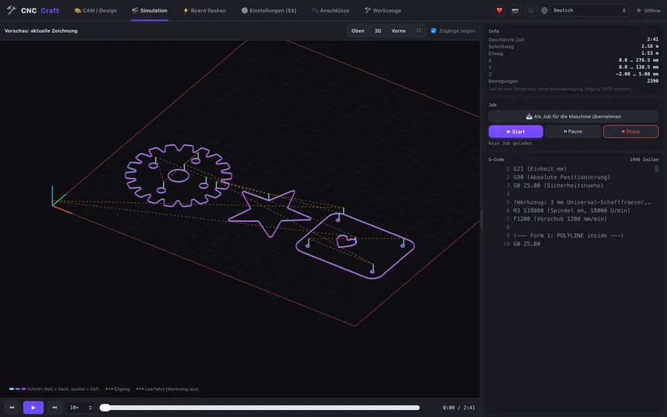
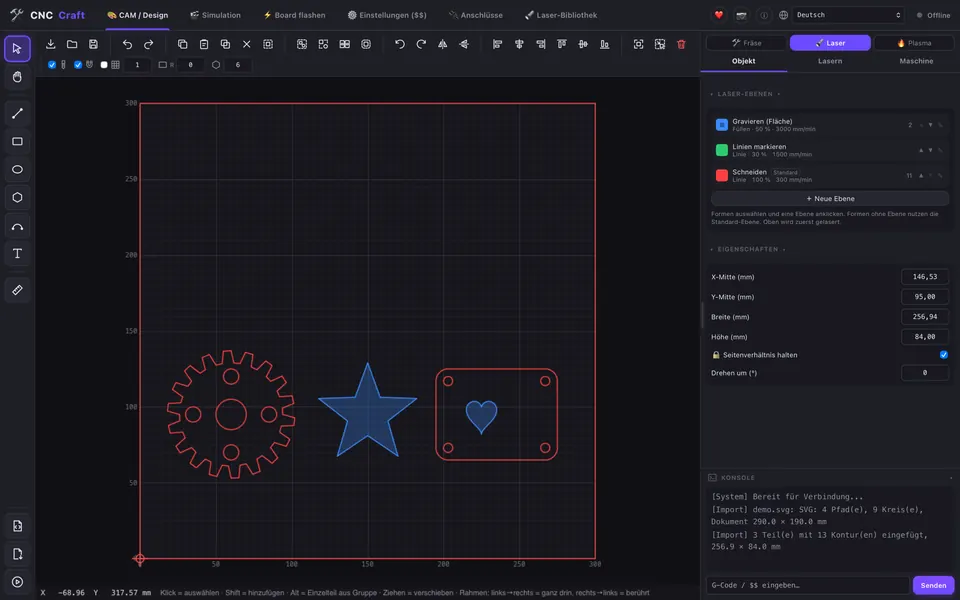
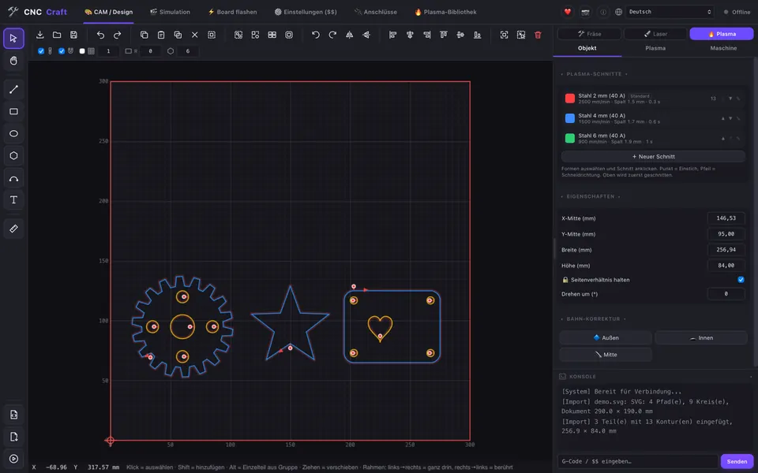
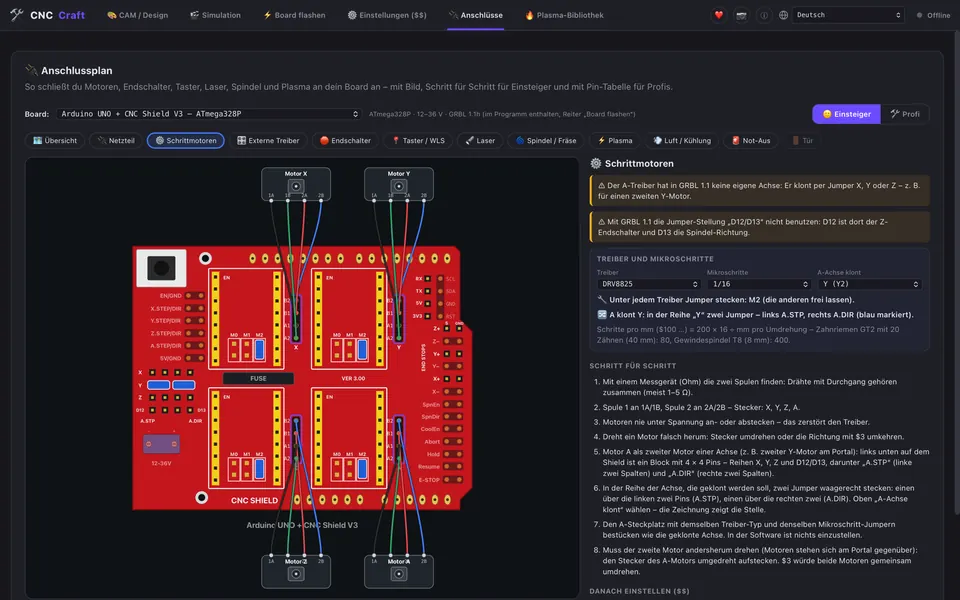
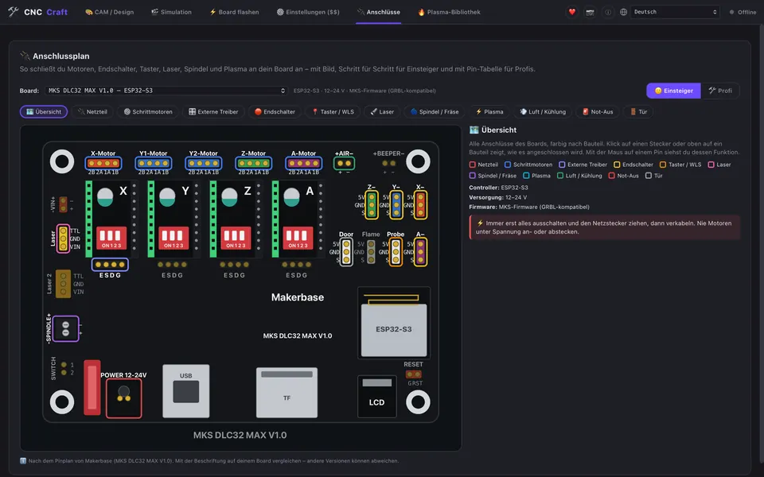
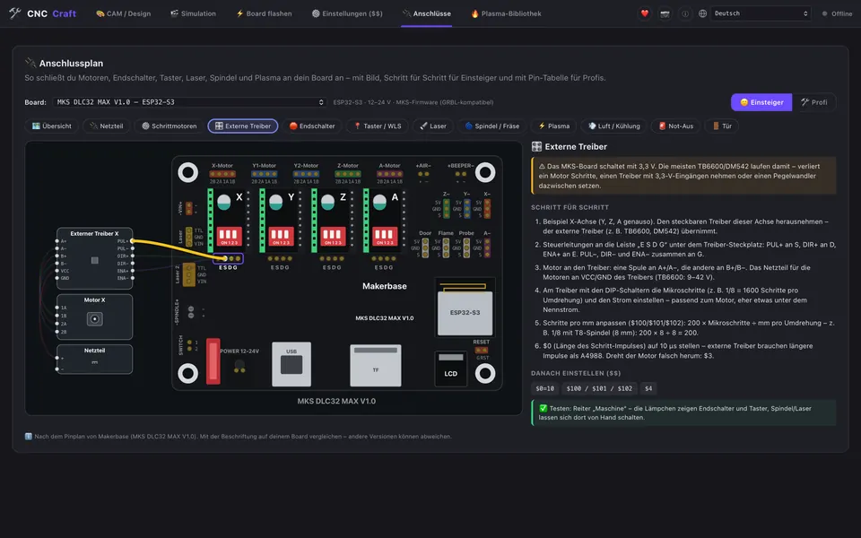
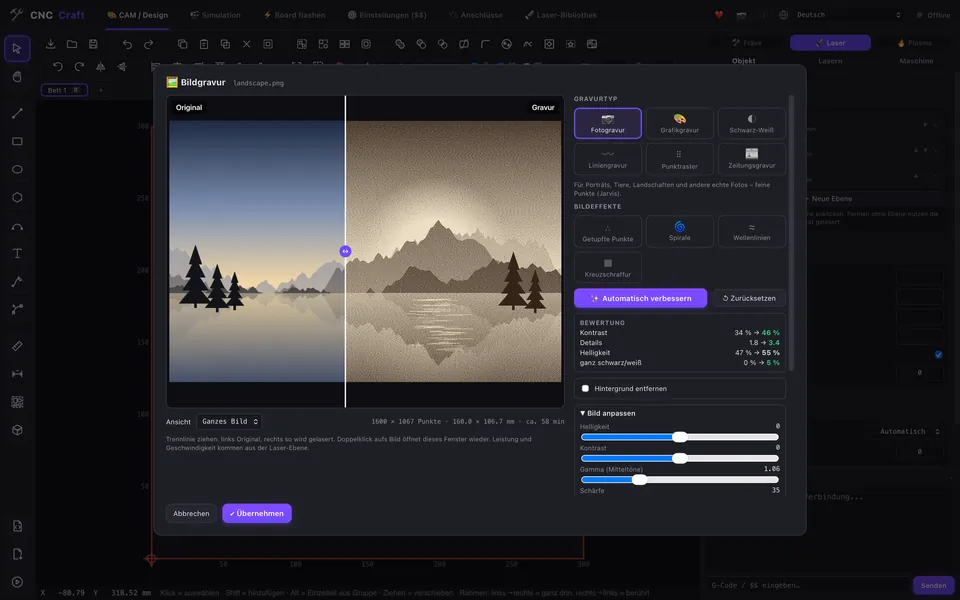
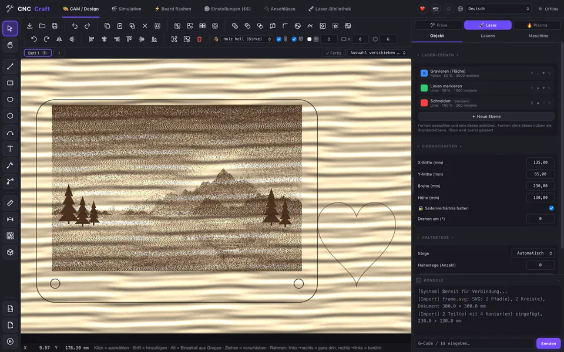
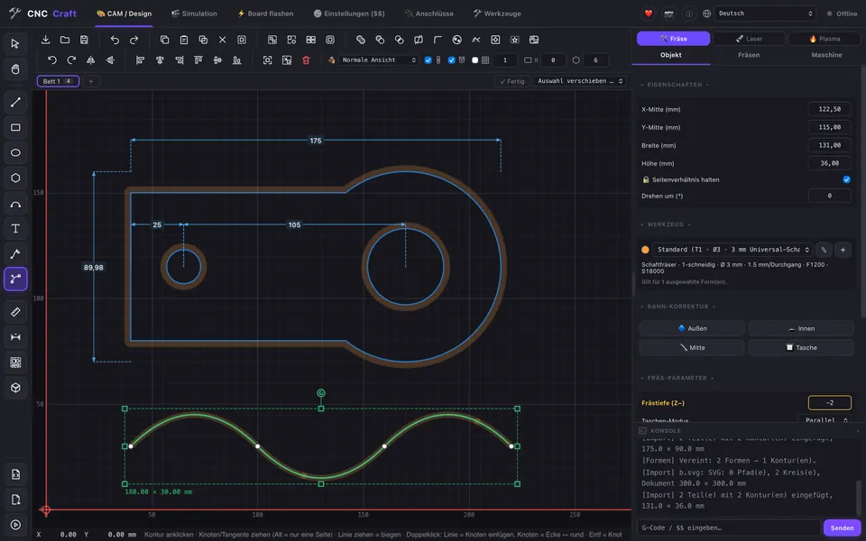
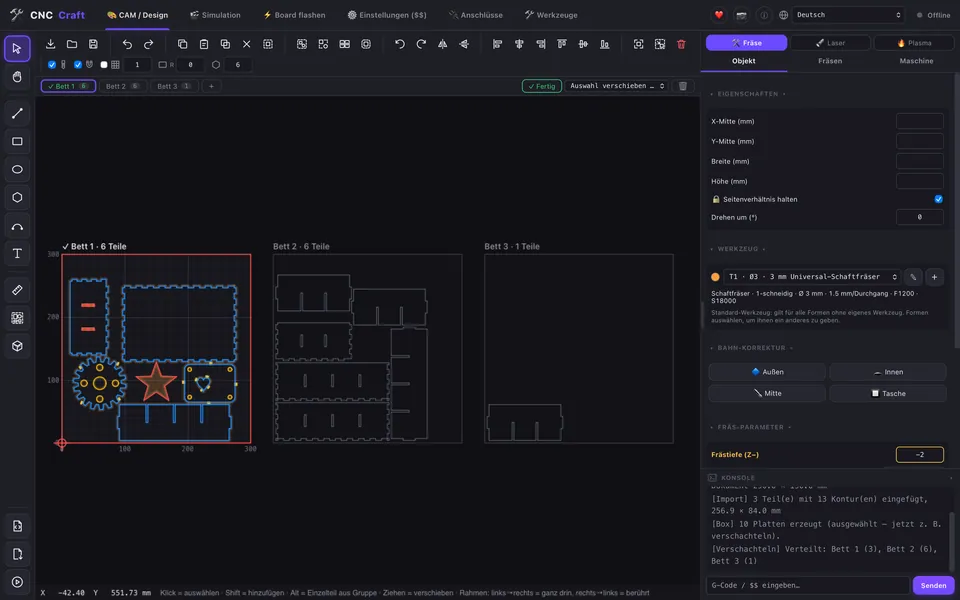
Download
Kostenlos für alle. Neueste Version: siehe GitHub. Alle Dateien und ältere Versionen gibt es unter GitHub Releases.
🍎 macOS
⬇ Apple-Chip (M1–M4) · .dmg⬇ Intel · .dmg🪟 Windows
⬇ Installation · .exe⬇ Installation · .msi🐧 Linux
⬇ AppImage⬇ Debian/Ubuntu · .deb⬇ Fedora/openSUSE · .rpm⚠️ Sicherheit zuerst
- Laser nie unbeaufsichtigt laufen lassen – Laserschutzbrille tragen und Feuerlöscher bereithalten.
- Jede Maschine braucht einen echten Not-Aus-Schalter. Die Stopp-Knöpfe im Programm ersetzen ihn nicht.
- Neue Jobs zuerst ohne Werkstück oder mit wenig Leistung testen. CNC Craft ist eine Beta-Version ohne Gewährleistung.
Häufige Fragen
Ist CNC Craft wirklich kostenlos?
Ja. CNC Craft ist Open Source unter der Lizenz GPL-3.0. Alle Funktionen sind frei, es gibt keine Bezahl-Version und kein Abo.
Welche Maschinen und Steuerungen werden unterstützt?
Laser, CNC-Fräsen und Plasmaschneider mit GRBL, grblHAL, FluidNC oder Grbl_ESP32 (USB und WLAN), Marlin, Ruida-CO₂-Steuerungen und K40-Laser (M2 Nano). Boards wie MKS DLC32 und Arduino mit CNC Shield sind gut getestet.
Ersetzt es LightBurn oder Estlcam?
CNC Craft ist eine kostenlose Alternative mit ähnlicher Arbeitsweise: Laser-Ebenen wie in LightBurn, Fräsbahnen wie in Estlcam und Maschinensteuerung wie in OpenBuilds. Es ist mit diesen Produkten nicht verbunden.
Läuft es auf Mac und Linux?
Ja – macOS (Apple-Chip und Intel), Windows 10/11 und Linux (AppImage, .deb, .rpm).
Wird es noch weiterentwickelt?
Ja, CNC Craft ist in der Beta-Phase und bekommt regelmäßig neue Funktionen. Fehlermeldungen und Ideen sind auf GitHub willkommen.
CNC Craft unterstützen
CNC Craft ist kostenlos und bleibt es. Wenn es dir hilft, kannst du die Entwicklung unterstützen – oder einfach einen Stern geben und es weitererzählen.